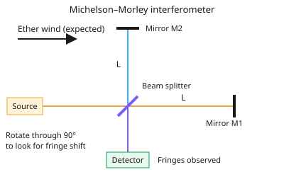

A-level Physics Year 13 · Topic 22
Turning points: special relativity
Special relativity changed our understanding of space and time.
We will see how the Michelson Morley experiment found no ether, and how Einstein's two postulates followed.
Then we calculate time dilation and length contraction, use muons as evidence, and link mass and energy with E equals m c squared.
- 4 subtopics
- 168 questions
- Free: 22.1 notes and 10 questions
In this topic
- 22.1The Michelson–Morley experiment and the etherFree below · 24 questions
- 22.2Einstein's postulates and time dilationOpen in Full Marks · 19 questions
- 22.3Length contraction and experimental evidence (muon decay)Open in Full Marks · 61 questions
- 22.4Relativistic mass, momentum and energy (E = mc²)Open in Full Marks · 64 questions
22.1 · Free notes
The Michelson–Morley experiment and the ether

Key points
- The ether was a hypothetical, stationary, all-pervading medium that 19th-century physicists thought carried light waves. It was supposed to define an absolute frame of reference in which light travels at c.
- Classically (Galilean relativity) velocities simply add. The Earth moves through the ether at about 3.0×10⁴ m s⁻¹ (its orbital speed), so an ether wind should make the speed of light differ between directions.
- The Michelson–Morley interferometer uses a monochromatic source, a half-silvered beam splitter, two perpendicular arms of equal length L with mirrors, and a telescope or detector to view interference fringes.
- Light going parallel to the ether wind and back should take longer than light going across it and back: t∥ = 2Lc/(c² − v²) and t⊥ = 2L/√(c² − v²). The difference gives a path difference of about Lv²/c² between the arms.
- The whole apparatus was rotated through 90°. The roles of the arms swap, so the fringe pattern should shift by about 2Lv²/(λc²) fringes. With L ≈ 11 m and λ ≈ 550 nm this is about 0.4 of a fringe.
- The path length was increased by multiple reflections along each arm. The apparatus sat on a stone slab floating in mercury, which allowed smooth rotation and reduced vibrations.
- Result: a null result. No significant fringe shift was seen (far less than predicted), and repeating the experiment at different times of year gave the same outcome.
- Conclusion: there was no evidence for the ether or for an absolute frame. The speed of light appears independent of the motion of the observer or source.
- The null result was a key stimulus for Einstein's postulates (1905). Exam answers should say the experiment was designed to detect the Earth's motion through the ether, and that it failed to do so.
- Exam tip: link each feature to its purpose. The beam splitter makes coherent beams, the perpendicular arms compare speeds in two directions, rotation maximises the expected shift, and long paths increase sensitivity.
In more detail
- Worked expected shift: with effective arms of 11 m, Earth's speed 3.0 × 10⁴ m s⁻¹ and λ = 590 nm, the ether theory predicted about 2Lv² ÷ λc² ≈ 0.4 of a fringe; less than 0.02 was seen.
- Why so precise: v/c for the Earth is only 10⁻⁴, so the predicted time difference depends on (v/c)² = 10⁻⁸, which needs interference to detect.
- Design features: the stone slab floated on mercury so it could be rotated smoothly and vibrations were damped; mirrors reflected the light back and forth to lengthen the arms.
- Galilean idea tested: classically, speeds add (v′ = v ± u), so light should travel at different speeds with and against the ether wind. It did not.
Practice
The Michelson–Morley experiment and the ether: 10 questions
Pick an answer to check it, or open the answer for the explanation.
1. What was the main aim of the Michelson–Morley experiment?
- To show that light behaves as a particle
- To measure the speed of light in a vacuum
- To detect the Earth's motion through the ether
- To measure the wavelength of light very precisely
Show answer
C: To detect the Earth's motion through the ether. It was designed to detect the Earth's motion through the ether by looking for a shift in interference fringes as the apparatus was rotated.
2. In the ether theory, what was the ether assumed to be?
- A stationary medium through which light waves travelled
- A magnetic field filling all of space
- A gas dragged along with the Earth's atmosphere
- A beam of particles emitted by the Sun
Show answer
A: A stationary medium through which light waves travelled. The ether was proposed as a stationary medium that carried light waves and defined an absolute frame in which light has speed c.
3. Which observation was the key result of the Michelson–Morley experiment?
- The fringe spacing doubled when the arms were lengthened
- The fringes disappeared completely
- No significant fringe shift on rotating the apparatus
- The fringes moved by exactly one whole fringe
Show answer
C: No significant fringe shift on rotating the apparatus. A null result: no significant fringe shift was seen on rotation, so no ether wind was detected.
4. What is the function of the half-silvered mirror (beam splitter) in the interferometer?
- To split the light into two coherent beams at right angles
- To absorb unwanted wavelengths
- To increase the speed of one of the beams
- To polarise the light
Show answer
A: To split the light into two coherent beams at right angles. It transmits half the light and reflects half, producing two coherent beams that travel along perpendicular arms and later recombine to give fringes.
5. Why was the interferometer rotated through 90° during the experiment?
- To make the two arms equal in length
- To focus the fringes on the telescope
- To remove interference from stray light
- To swap which arm lay along the ether wind, doubling the shift
Show answer
D: To swap which arm lay along the ether wind, doubling the shift. Rotation swaps the arms' orientation relative to the ether wind, so the fringe shift expected would change sign and total about 2Lv²/(λc²).
6. Expected fringe shift N = 2Lv²/(λc²). L = 11 m, v = 3.0×10⁴ m s⁻¹, λ = 550 nm, c = 3.0×10⁸ m s⁻¹. What is N?
- 4.0
- 40
- 0.20
- 0.40
Show answer
D: 0.40. v²/c² = 1.0×10⁻⁸. N = 2 × 11 × 1.0×10⁻⁸ / 5.5×10⁻⁷ = 0.40 fringe. The observed shift was far smaller than this.
7. Why was the light reflected several times along each arm of the interferometer?
- To reduce the intensity of the light
- To make the two beams more coherent
- To change the wavelength of the light
- To increase the path length so any fringe shift would be larger
Show answer
D: To increase the path length so any fringe shift would be larger. The expected shift is proportional to arm length, so multiple reflections effectively increased L and made a possible shift easier to detect.
8. Classically, with an ether wind along one arm, how do round-trip times compare for two arms of equal length L?
- Both arms take the same time
- The arm parallel to the wind takes longer
- The parallel arm takes exactly twice as long
- The arm perpendicular to the wind takes longer
Show answer
B: The arm parallel to the wind takes longer. t∥ = 2Lc/(c² − v²) is slightly larger than t⊥ = 2L/√(c² − v²), so the parallel arm takes longer. This difference gives the expected fringe shift.
9. Why was the experiment repeated at different times of the year?
- To measure the Earth's orbital radius
- The Earth's velocity changes, ruling out permanent rest in the ether
- To allow the mercury to cool
- Because the Sun's brightness changes
Show answer
B: The Earth's velocity changes, ruling out permanent rest in the ether. The Earth's velocity changes direction through the year, so it could not be at rest relative to the ether at every time. A null result every time is therefore significant.
10. Which conclusion did the null result eventually support?
- Light is faster when travelling with the Earth's motion
- The speed of light is the same for all inertial observers
- The Earth completely drags the ether along with it
- Light needs a medium of very low density
Show answer
B: The speed of light is the same for all inertial observers. No ether wind was found, consistent with Einstein's second postulate that the speed of light in free space is independent of the motion of the observer.
Keep going in Full Marks
Full Marks has 24 questions on The Michelson–Morley experiment and the ether (14 more than here), set out in practice levels. You also get notes and 3D models for all 4 subtopics of Turning points: special relativity, plus games, timed exams and past papers.
On your exam board
Not in the OCR A, OCR B, Edexcel and Cambridge specifications.